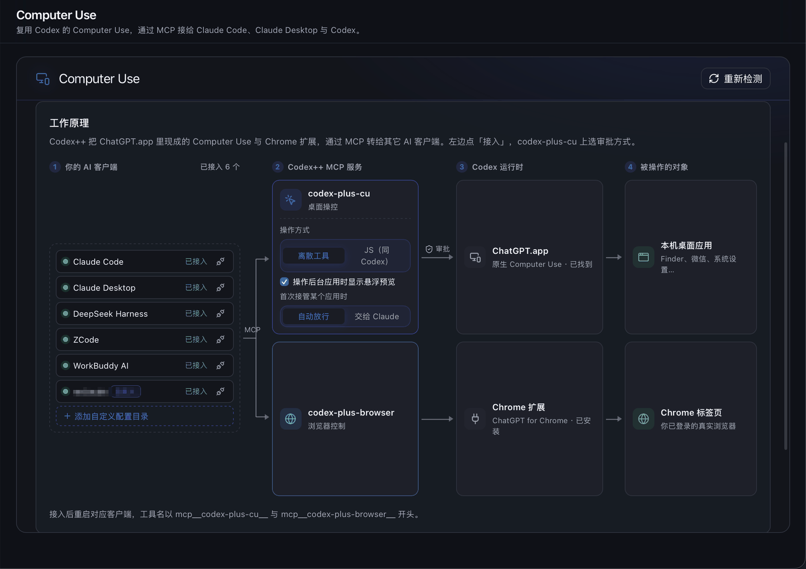
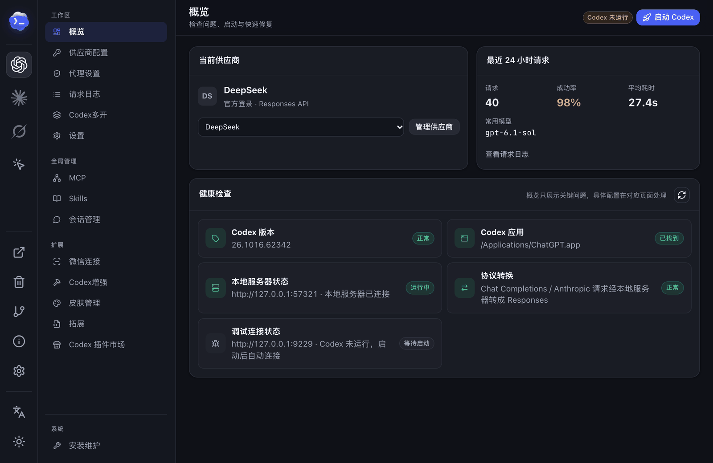
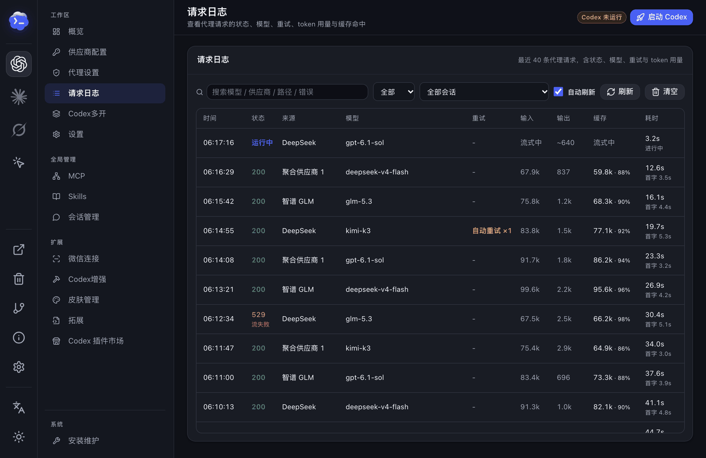
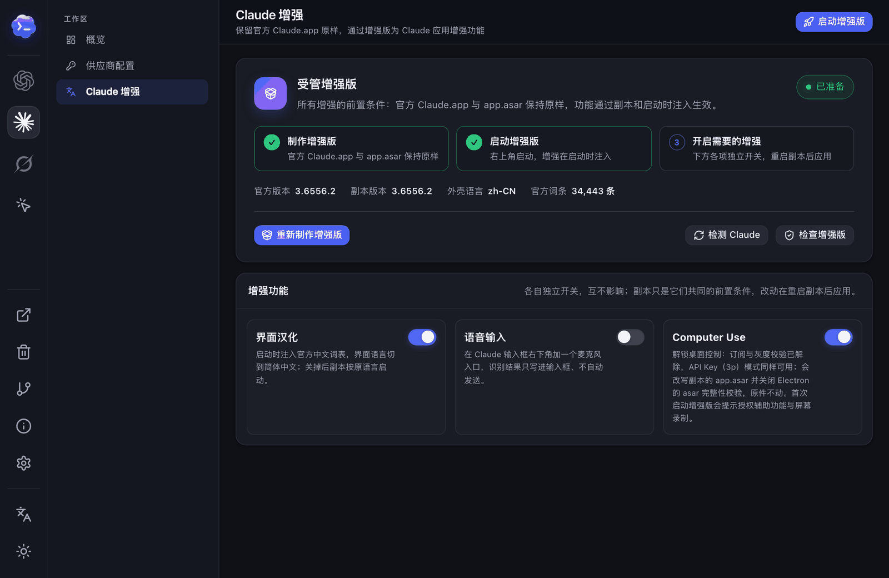
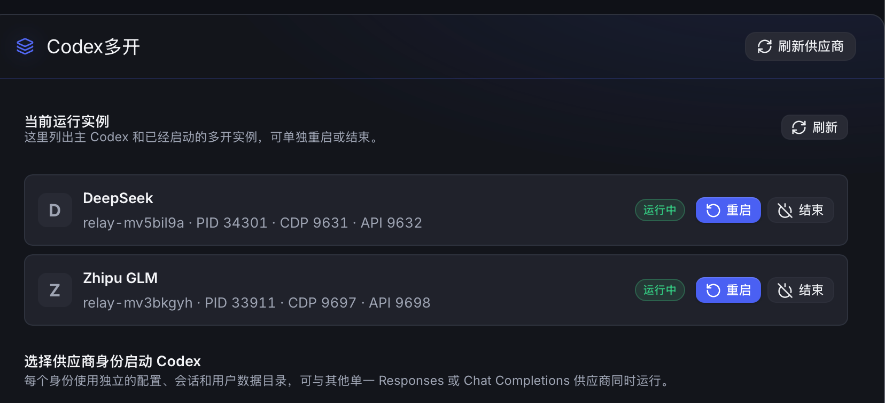
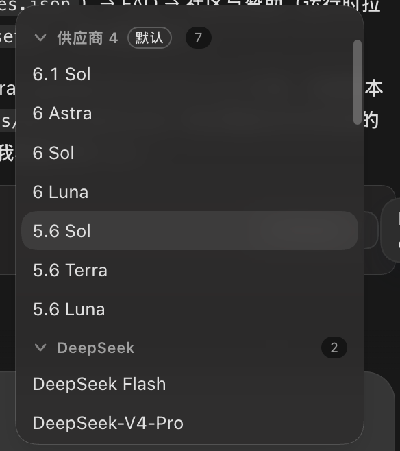
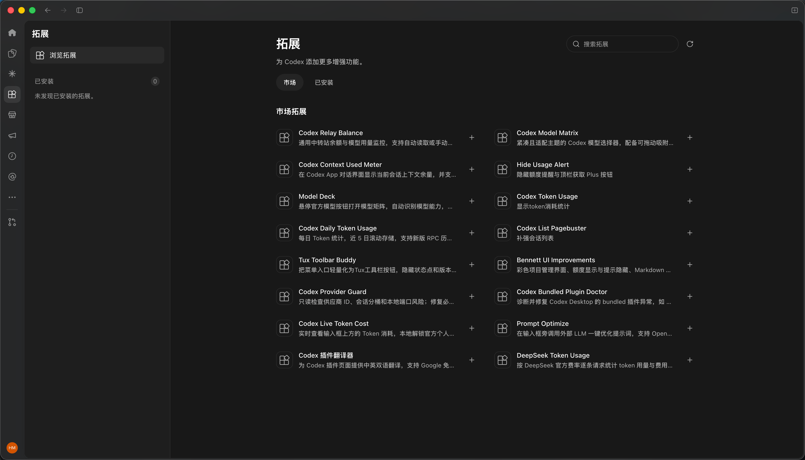
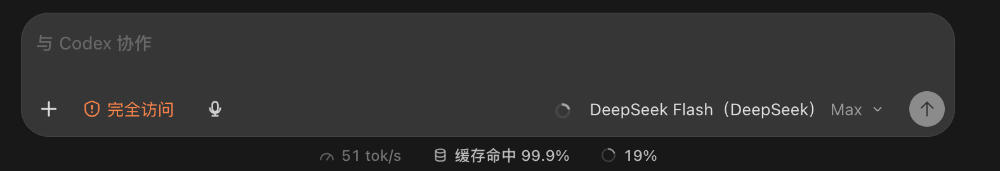
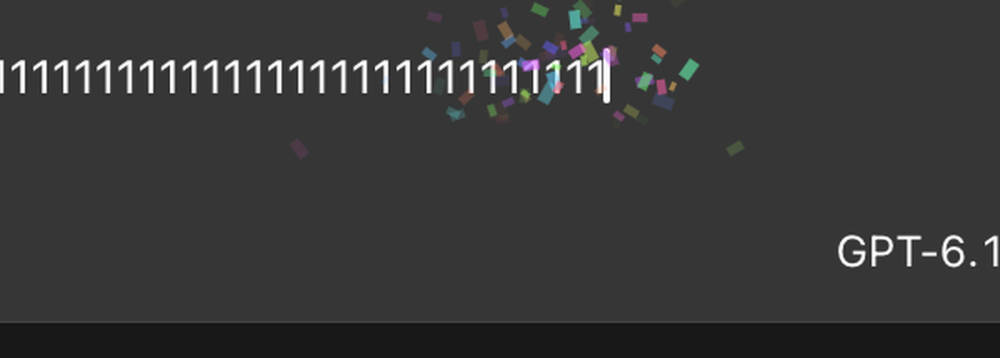

供应商自由切换
官方登录、官方 + API、纯 API、故障转移与模型聚合。
YOUR AGENTS, UPGRADED — 开源 · 本地 · Rust + Tauri
Codex、Claude Code、Claude Desktop、Grok 的供应商、增强与 Computer Use，一个管理器搞定。
不改官方应用的安装文件，双击打开就能用。
FEATURES · 功能矩阵
以 Codex 为核心，覆盖 Claude Code、Claude Desktop 与 Grok。所有增强可单独开关，关掉总开关，供应商与启动管理照常可用。
官方登录、官方 + API、纯 API、故障转移与模型聚合。
把 Codex 的桌面与浏览器控制接给其他 Agent。
Claude Code 供应商、Claude 增强版与 Grok CLI。
每次请求的状态、重试与 Token 用量都看得见。
上游过载时在代理层自动退避重试。
按模型设置上下文窗口与自动压缩阈值。
在 Codex 对话里委派 DeepSeek、Claude Code。
扫描、删除撤销、批量管理、导出与轮次回退。
每个供应商一个隔离的 Codex 实例。
纯 API Key 也能用原生 Standard / ⚡ Fast。
输入框下方显示速度、缓存命中与上下文占用。
语音输入、粘贴修复、下一步建议与打字特效。
社区脚本、MCP、Skill 与 Codex 插件管理。
扫码连接本机 Codex，出门也能派活。
扫描并清理 Codex、Claude 与 Codex++ 的缓存。
用量挂件与桌宠，换张图就是你的角色。
SHOWCASE · 真实截图
以下包含 Codex++ 的真实界面与功能介绍图。点选缩略图切换预览，点击大图查看原图。











CODEX PROVIDERS · Codex 供应商
四种接法独立配置、一键切换；每个模型还能单独声明上下文窗口。
使用 ChatGPT / Codex 官方账号登录，模型请求走官方通道，保持官方应用的完整体验与插件入口。
模型列表里写上窗口后缀，Codex++ 生成独立的 model_catalog_json，让 Codex 按当前模型使用对应窗口。未指定的模型继续沿用供应商级配置。
# 在模型列表里直接写窗口后缀
deepseek-v4-pro[1M]
claude-opus-5.5[200K]
your-model[128000]
# Codex++ 生成 model_catalog_json
# codex 按当前模型识别各自窗口 ↓GETTING STARTED · 快速上手
Codex 功能配合官方 Codex / ChatGPT 桌面应用使用；Claude、Grok 相关功能需安装对应客户端。
前往 GitHub Releases：Windows 选 *-windows-x64-setup.exe，macOS（Apple Silicon / Intel）选 *-macos-universal.dmg，拖入「应用程序」。
双击始终打开管理界面：确认官方应用路径，选择供应商模式，按需开启增强功能并保存。API Key 只保存在本机。
点击「启动」，加载已保存的供应商与增强配置并打开官方应用。依赖注入的设置在保存后重启 Codex 生效。
所有界面增强均可单独关闭；关闭增强总开关后，供应商与启动管理能力照常可用。
CHANGELOG · 最新动态
最近几个版本的更新摘要，完整记录见仓库 CHANGELOG 与 Releases。
FAQ · 常见问题
确认是在 Codex++ 界面中点击「启动」打开的官方应用。打开管理工具的「安装维护」与「关于」页面，检查应用路径、启动状态和诊断日志。
先在供应商详情中运行模型测试或 Provider Doctor，确认协议、Base URL、Key 与模型匹配。纯 API 和官方登录 + API 使用不同的认证位置，不要手工复制两种模式的 auth.json。
先确认已经保存，并通过 Codex++ 重启 Codex。当前模型还需要声明 Fast 服务等级：在「供应商配置」中打开该模型的配置，设置「Fast（priority）支持」，保存模型与供应商后重启。请按供应商实际能力声明；此功能只恢复客户端入口，服务限制与计费仍以供应商为准。
接入后需要重启对应客户端才会加载工具；Claude Desktop 退出时会重写自己的配置，建议先完全退出再接入。仍然没有时，在「Computer Use」页的「配置路径与自定义目录」里核对客户端实际读取的目录，并确认已给 ChatGPT 授予辅助功能与屏幕录制权限。目前仅支持 macOS。
可以分别关闭，也可以关闭增强总开关。Codex++ 依赖官方桌面应用的页面结构、CDP 和本地数据格式；官方应用更新后，部分功能可能需要跟随适配。修改供应商配置或会话数据前，请保留备份。
设置了 CODEX_HOME 时，Codex 主目录以该变量为准；否则使用 ~/.codex。API Key 只保存在本机，提交反馈前请隐藏密钥与认证信息。
COMMUNITY · 社区与支持
遇到问题带上系统、Codex++ 版本、复现步骤与已脱敏的日志提 issue；也欢迎分享拓展、主题和使用经验。
感谢以下赞助商对项目的支持。服务范围、价格与活动以各平台官网说明为准。
想支持项目或展示品牌？联系维护者。
免费开源 · AGPL-3.0 · Windows 与 macOS 双平台
配置与会话数据都在你自己的电脑上。
配合官方 Codex、Claude、Grok 等客户端使用；安装后双击打开 Codex++，配置好供应商，从界面里点「启动」。